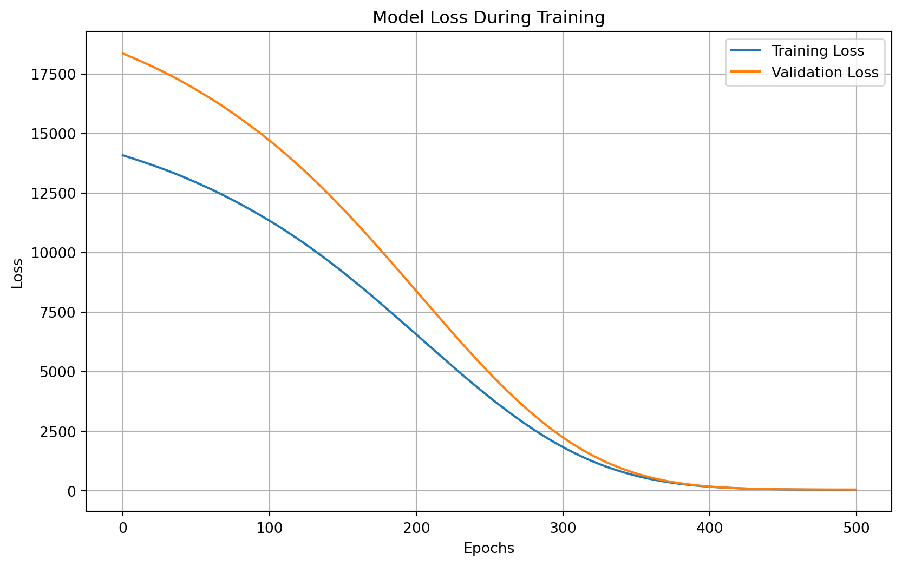

<!DOCTYPE html>
<html xmlns="http://www.w3.org/1999/xhtml" lang="en" xml:lang="en"><head>

<meta charset="utf-8">
<meta name="generator" content="quarto-1.5.56">

<meta name="viewport" content="width=device-width, initial-scale=1.0, user-scalable=yes">


<title>2&nbsp; Benchmarking Deep Learning with Libraries – 24DS-DL</title>
<style>
code{white-space: pre-wrap;}
span.smallcaps{font-variant: small-caps;}
div.columns{display: flex; gap: min(4vw, 1.5em);}
div.column{flex: auto; overflow-x: auto;}
div.hanging-indent{margin-left: 1.5em; text-indent: -1.5em;}
ul.task-list{list-style: none;}
ul.task-list li input[type="checkbox"] {
  width: 0.8em;
  margin: 0 0.8em 0.2em -1em; /* quarto-specific, see https://github.com/quarto-dev/quarto-cli/issues/4556 */ 
  vertical-align: middle;
}
/* CSS for syntax highlighting */
pre > code.sourceCode { white-space: pre; position: relative; }
pre > code.sourceCode > span { line-height: 1.25; }
pre > code.sourceCode > span:empty { height: 1.2em; }
.sourceCode { overflow: visible; }
code.sourceCode > span { color: inherit; text-decoration: inherit; }
div.sourceCode { margin: 1em 0; }
pre.sourceCode { margin: 0; }
@media screen {
div.sourceCode { overflow: auto; }
}
@media print {
pre > code.sourceCode { white-space: pre-wrap; }
pre > code.sourceCode > span { display: inline-block; text-indent: -5em; padding-left: 5em; }
}
pre.numberSource code
  { counter-reset: source-line 0; }
pre.numberSource code > span
  { position: relative; left: -4em; counter-increment: source-line; }
pre.numberSource code > span > a:first-child::before
  { content: counter(source-line);
    position: relative; left: -1em; text-align: right; vertical-align: baseline;
    border: none; display: inline-block;
    -webkit-touch-callout: none; -webkit-user-select: none;
    -khtml-user-select: none; -moz-user-select: none;
    -ms-user-select: none; user-select: none;
    padding: 0 4px; width: 4em;
  }
pre.numberSource { margin-left: 3em;  padding-left: 4px; }
div.sourceCode
  {   }
@media screen {
pre > code.sourceCode > span > a:first-child::before { text-decoration: underline; }
}
</style>


<script src="https://cdnjs.cloudflare.com/ajax/libs/jquery/3.5.1/jquery.min.js" integrity="sha512-bLT0Qm9VnAYZDflyKcBaQ2gg0hSYNQrJ8RilYldYQ1FxQYoCLtUjuuRuZo+fjqhx/qtq/1itJ0C2ejDxltZVFg==" crossorigin="anonymous"></script><script src="site_libs/quarto-nav/quarto-nav.js"></script>
<script src="site_libs/quarto-nav/headroom.min.js"></script>
<script src="site_libs/clipboard/clipboard.min.js"></script>
<script src="site_libs/quarto-search/autocomplete.umd.js"></script>
<script src="site_libs/quarto-search/fuse.min.js"></script>
<script src="site_libs/quarto-search/quarto-search.js"></script>
<meta name="quarto:offset" content="./">
<link href="./microprojectsMLP.html" rel="next">
<link href="./intro.html" rel="prev">
<script src="site_libs/quarto-html/quarto.js"></script>
<script src="site_libs/quarto-html/popper.min.js"></script>
<script src="site_libs/quarto-html/tippy.umd.min.js"></script>
<script src="site_libs/quarto-html/anchor.min.js"></script>
<link href="site_libs/quarto-html/tippy.css" rel="stylesheet">
<link href="site_libs/quarto-html/quarto-syntax-highlighting.css" rel="stylesheet" id="quarto-text-highlighting-styles">
<script src="site_libs/bootstrap/bootstrap.min.js"></script>
<link href="site_libs/bootstrap/bootstrap-icons.css" rel="stylesheet">
<link href="site_libs/bootstrap/bootstrap.min.css" rel="stylesheet" id="quarto-bootstrap" data-mode="light">
<script id="quarto-search-options" type="application/json">{
  "location": "sidebar",
  "copy-button": false,
  "collapse-after": 3,
  "panel-placement": "start",
  "type": "textbox",
  "limit": 50,
  "keyboard-shortcut": [
    "f",
    "/",
    "s"
  ],
  "show-item-context": false,
  "language": {
    "search-no-results-text": "No results",
    "search-matching-documents-text": "matching documents",
    "search-copy-link-title": "Copy link to search",
    "search-hide-matches-text": "Hide additional matches",
    "search-more-match-text": "more match in this document",
    "search-more-matches-text": "more matches in this document",
    "search-clear-button-title": "Clear",
    "search-text-placeholder": "",
    "search-detached-cancel-button-title": "Cancel",
    "search-submit-button-title": "Submit",
    "search-label": "Search"
  }
}</script>
<script src="https://cdnjs.cloudflare.com/ajax/libs/require.js/2.3.6/require.min.js" integrity="sha512-c3Nl8+7g4LMSTdrm621y7kf9v3SDPnhxLNhcjFJbKECVnmZHTdo+IRO05sNLTH/D3vA6u1X32ehoLC7WFVdheg==" crossorigin="anonymous"></script>

<script type="application/javascript">define('jquery', [],function() {return window.jQuery;})</script>


</head>

<body class="nav-sidebar floating">

<div id="quarto-search-results"></div>
  <header id="quarto-header" class="headroom fixed-top">
  <nav class="quarto-secondary-nav">
    <div class="container-fluid d-flex">
      <button type="button" class="quarto-btn-toggle btn" data-bs-toggle="collapse" role="button" data-bs-target=".quarto-sidebar-collapse-item" aria-controls="quarto-sidebar" aria-expanded="false" aria-label="Toggle sidebar navigation" onclick="if (window.quartoToggleHeadroom) { window.quartoToggleHeadroom(); }">
        <i class="bi bi-layout-text-sidebar-reverse"></i>
      </button>
        <nav class="quarto-page-breadcrumbs" aria-label="breadcrumb"><ol class="breadcrumb"><li class="breadcrumb-item"><a href="./benchmarkDL.html"><span class="chapter-number">2</span>&nbsp; <span class="chapter-title">Benchmarking Deep Learning with Libraries</span></a></li></ol></nav>
        <a class="flex-grow-1" role="navigation" data-bs-toggle="collapse" data-bs-target=".quarto-sidebar-collapse-item" aria-controls="quarto-sidebar" aria-expanded="false" aria-label="Toggle sidebar navigation" onclick="if (window.quartoToggleHeadroom) { window.quartoToggleHeadroom(); }">      
        </a>
      <button type="button" class="btn quarto-search-button" aria-label="Search" onclick="window.quartoOpenSearch();">
        <i class="bi bi-search"></i>
      </button>
    </div>
  </nav>
</header>
<!-- content -->
<div id="quarto-content" class="quarto-container page-columns page-rows-contents page-layout-article">
<!-- sidebar -->
  <nav id="quarto-sidebar" class="sidebar collapse collapse-horizontal quarto-sidebar-collapse-item sidebar-navigation floating overflow-auto">
    <div class="pt-lg-2 mt-2 text-left sidebar-header">
    <div class="sidebar-title mb-0 py-0">
      <a href="./">24DS-DL</a> 
    </div>
      </div>
        <div class="mt-2 flex-shrink-0 align-items-center">
        <div class="sidebar-search">
        <div id="quarto-search" class="" title="Search"></div>
        </div>
        </div>
    <div class="sidebar-menu-container"> 
    <ul class="list-unstyled mt-1">
        <li class="sidebar-item">
  <div class="sidebar-item-container"> 
  <a href="./index.html" class="sidebar-item-text sidebar-link">
 <span class="menu-text">Preface</span></a>
  </div>
</li>
        <li class="sidebar-item">
  <div class="sidebar-item-container"> 
  <a href="./intro.html" class="sidebar-item-text sidebar-link">
 <span class="menu-text"><span class="chapter-number">1</span>&nbsp; <span class="chapter-title">Basics of Artificial Neural Network</span></span></a>
  </div>
</li>
        <li class="sidebar-item">
  <div class="sidebar-item-container"> 
  <a href="./benchmarkDL.html" class="sidebar-item-text sidebar-link active">
 <span class="menu-text"><span class="chapter-number">2</span>&nbsp; <span class="chapter-title">Benchmarking Deep Learning with Libraries</span></span></a>
  </div>
</li>
        <li class="sidebar-item">
  <div class="sidebar-item-container"> 
  <a href="./microprojectsMLP.html" class="sidebar-item-text sidebar-link">
 <span class="menu-text"><span class="chapter-number">3</span>&nbsp; <span class="chapter-title">Micro Projects using ANN</span></span></a>
  </div>
</li>
        <li class="sidebar-item">
  <div class="sidebar-item-container"> 
  <a href="./DLforvisualrecognition.html" class="sidebar-item-text sidebar-link">
 <span class="menu-text"><span class="chapter-number">4</span>&nbsp; <span class="chapter-title">Deep Learning for Visual Recognition</span></span></a>
  </div>
</li>
        <li class="sidebar-item">
  <div class="sidebar-item-container"> 
  <a href="./summary.html" class="sidebar-item-text sidebar-link">
 <span class="menu-text"><span class="chapter-number">5</span>&nbsp; <span class="chapter-title">Summary</span></span></a>
  </div>
</li>
        <li class="sidebar-item">
  <div class="sidebar-item-container"> 
  <a href="./references.html" class="sidebar-item-text sidebar-link">
 <span class="menu-text">References</span></a>
  </div>
</li>
    </ul>
    </div>
</nav>
<div id="quarto-sidebar-glass" class="quarto-sidebar-collapse-item" data-bs-toggle="collapse" data-bs-target=".quarto-sidebar-collapse-item"></div>
<!-- margin-sidebar -->
    <div id="quarto-margin-sidebar" class="sidebar margin-sidebar">
        <nav id="TOC" role="doc-toc" class="toc-active">
    <h2 id="toc-title">Table of contents</h2>
   
  <ul>
  <li><a href="#transitioning-from-custom-mlp-architecture-to-keras-for-generalized-applications" id="toc-transitioning-from-custom-mlp-architecture-to-keras-for-generalized-applications" class="nav-link active" data-scroll-target="#transitioning-from-custom-mlp-architecture-to-keras-for-generalized-applications"><span class="header-section-number">2.1</span> Transitioning from Custom MLP Architecture to Keras for Generalized Applications</a></li>
  <li><a href="#limitations-of-the-custom-mlp-class-architecture" id="toc-limitations-of-the-custom-mlp-class-architecture" class="nav-link" data-scroll-target="#limitations-of-the-custom-mlp-class-architecture"><span class="header-section-number">2.2</span> Limitations of the Custom MLP Class Architecture</a>
  <ul class="collapse">
  <li><a href="#scalability" id="toc-scalability" class="nav-link" data-scroll-target="#scalability"><span class="header-section-number">2.2.1</span> Scalability</a></li>
  <li><a href="#optimization-challenges" id="toc-optimization-challenges" class="nav-link" data-scroll-target="#optimization-challenges"><span class="header-section-number">2.2.2</span> Optimization Challenges</a></li>
  <li><a href="#performance-bottlenecks" id="toc-performance-bottlenecks" class="nav-link" data-scroll-target="#performance-bottlenecks"><span class="header-section-number">2.2.3</span> Performance Bottlenecks</a></li>
  <li><a href="#generalization-issues" id="toc-generalization-issues" class="nav-link" data-scroll-target="#generalization-issues"><span class="header-section-number">2.2.4</span> Generalization Issues</a></li>
  <li><a href="#limited-ecosystem-support" id="toc-limited-ecosystem-support" class="nav-link" data-scroll-target="#limited-ecosystem-support"><span class="header-section-number">2.2.5</span> Limited Ecosystem Support</a></li>
  </ul></li>
  <li><a href="#keras-a-practical-alternative-for-generalized-applications" id="toc-keras-a-practical-alternative-for-generalized-applications" class="nav-link" data-scroll-target="#keras-a-practical-alternative-for-generalized-applications"><span class="header-section-number">2.3</span> <code>Keras</code>: A Practical Alternative for Generalized Applications</a>
  <ul class="collapse">
  <li><a href="#why-keras" id="toc-why-keras" class="nav-link" data-scroll-target="#why-keras"><span class="header-section-number">2.3.1</span> Why <code>Keras</code>?</a></li>
  <li><a href="#keras-model-overview" id="toc-keras-model-overview" class="nav-link" data-scroll-target="#keras-model-overview"><span class="header-section-number">2.3.2</span> Keras Model Overview</a></li>
  </ul></li>
  <li><a href="#transition-example" id="toc-transition-example" class="nav-link" data-scroll-target="#transition-example"><span class="header-section-number">2.4</span> Transition Example</a>
  <ul class="collapse">
  <li><a href="#simulating-xor-gate-with-keras" id="toc-simulating-xor-gate-with-keras" class="nav-link" data-scroll-target="#simulating-xor-gate-with-keras"><span class="header-section-number">2.4.1</span> Simulating XOR Gate with <code>Keras</code></a></li>
  <li><a href="#performance-evaluation-of-the-keras-xor-gate-model" id="toc-performance-evaluation-of-the-keras-xor-gate-model" class="nav-link" data-scroll-target="#performance-evaluation-of-the-keras-xor-gate-model"><span class="header-section-number">2.4.2</span> Performance evaluation of the <code>keras</code> XOR gate model</a></li>
  <li><a href="#task-works" id="toc-task-works" class="nav-link" data-scroll-target="#task-works"><span class="header-section-number">2.4.3</span> Task works</a></li>
  </ul></li>
  </ul>
</nav>
    </div>
<!-- main -->
<main class="content" id="quarto-document-content">

<header id="title-block-header" class="quarto-title-block default">
<div class="quarto-title">
<h1 class="title"><span class="chapter-number">2</span>&nbsp; <span class="chapter-title">Benchmarking Deep Learning with Libraries</span></h1>
</div>


<div class="quarto-title-meta">

    
  
    
  </div>
  


</header>


<section id="transitioning-from-custom-mlp-architecture-to-keras-for-generalized-applications" class="level2" data-number="2.1">
<h2 data-number="2.1" class="anchored" data-anchor-id="transitioning-from-custom-mlp-architecture-to-keras-for-generalized-applications"><span class="header-section-number">2.1</span> Transitioning from Custom MLP Architecture to Keras for Generalized Applications</h2>
<p>The custom Multi-Layer Perceptron (MLP) class architecture implemented earlier provides a solid foundational understanding of how neural networks function, including layer definitions, activation mechanisms, forward and backward propagation, and performance evaluation. However, when scaling these implementations to generalizable and complex applications, certain limitations of such custom approaches become evident. This section introduces Keras, a widely adopted library for building and benchmarking Artificial Neural Networks (ANNs), highlighting its relevance as a practical alternative to custom implementations.</p>
</section>
<section id="limitations-of-the-custom-mlp-class-architecture" class="level2" data-number="2.2">
<h2 data-number="2.2" class="anchored" data-anchor-id="limitations-of-the-custom-mlp-class-architecture"><span class="header-section-number">2.2</span> Limitations of the Custom MLP Class Architecture</h2>
<p>While the MLP class offers flexibility and transparency for learning purposes, its limitations include:</p>
<section id="scalability" class="level3" data-number="2.2.1">
<h3 data-number="2.2.1" class="anchored" data-anchor-id="scalability"><span class="header-section-number">2.2.1</span> Scalability</h3>
<ol type="1">
<li><p>The manual initialization of weights, biases, and layer-specific computations can become cumbersome as the network depth and size increase.</p></li>
<li><p>Handling large datasets or multiple training tasks requires additional optimization techniques that are non-trivial to implement manually.</p></li>
</ol>
</section>
<section id="optimization-challenges" class="level3" data-number="2.2.2">
<h3 data-number="2.2.2" class="anchored" data-anchor-id="optimization-challenges"><span class="header-section-number">2.2.2</span> Optimization Challenges</h3>
<ol type="1">
<li><p>Implementing advanced optimizers like <code>RMSprop</code>, <code>Adam</code>, or <code>adaptive gradient methods</code> demands significant coding effort.</p></li>
<li><p>Features like learning rate scheduling and early stopping require extensive additional logic.</p></li>
</ol>
</section>
<section id="performance-bottlenecks" class="level3" data-number="2.2.3">
<h3 data-number="2.2.3" class="anchored" data-anchor-id="performance-bottlenecks"><span class="header-section-number">2.2.3</span> Performance Bottlenecks</h3>
<ol type="1">
<li><p>The current design lacks GPU acceleration, limiting its applicability to computationally intensive tasks.</p></li>
<li><p>Debugging and profiling performance manually can be error-prone and time-consuming.</p></li>
</ol>
</section>
<section id="generalization-issues" class="level3" data-number="2.2.4">
<h3 data-number="2.2.4" class="anchored" data-anchor-id="generalization-issues"><span class="header-section-number">2.2.4</span> Generalization Issues</h3>
<ol type="1">
<li><p>While sufficient for specific tasks like XOR gate simulations, the architecture lacks modularity for handling diverse, general-purpose applications such as image recognition or text classification.</p></li>
<li><p>Integration with modern research architectures, such as convolutional or recurrent networks, is challenging.</p></li>
</ol>
</section>
<section id="limited-ecosystem-support" class="level3" data-number="2.2.5">
<h3 data-number="2.2.5" class="anchored" data-anchor-id="limited-ecosystem-support"><span class="header-section-number">2.2.5</span> Limited Ecosystem Support</h3>
<p>Custom implementations do not leverage pre-trained models, a key requirement for applications in transfer learning and fine-tuning.</p>
</section>
</section>
<section id="keras-a-practical-alternative-for-generalized-applications" class="level2" data-number="2.3">
<h2 data-number="2.3" class="anchored" data-anchor-id="keras-a-practical-alternative-for-generalized-applications"><span class="header-section-number">2.3</span> <code>Keras</code>: A Practical Alternative for Generalized Applications</h2>
<p>Keras is a neural network Application Programming Interface (API) for Python that is tightly integrated with TensorFlow, which is used to build machine learning models. Keras’ models offer a simple, user-friendly way to define a neural network, which will then be built for you by TensorFlow.</p>
<section id="why-keras" class="level3" data-number="2.3.1">
<h3 data-number="2.3.1" class="anchored" data-anchor-id="why-keras"><span class="header-section-number">2.3.1</span> Why <code>Keras</code>?</h3>
<p>Keras addresses the limitations of from the scratch architecture by providing a high-level, modular, and extensible framework built on top of TensorFlow. Here’s how Keras improves upon the custom MLP class:</p>
<p><strong>Ease of Use:</strong></p>
<ul>
<li>Pre-built layers and optimizers simplify network creation without compromising flexibility.</li>
<li>APIs for common tasks, such as dataset preprocessing, model saving, and loading, minimize boilerplate code.</li>
</ul>
<p><strong>Scalability and Performance:</strong></p>
<ul>
<li>Support for GPUs and TPUs ensures computational efficiency, especially for large datasets and deep architectures.</li>
<li>Built-in profiling tools facilitate real-time performance monitoring and debugging.</li>
</ul>
<p><strong>Modularity for Advanced Architectures:</strong></p>
<ul>
<li><code>Keras</code> supports a wide range of network types, including Convolutional Neural Networks (CNNs), Recurrent Neural Networks (RNNs), and Transformers, which are impractical to implement from scratch.</li>
<li>The library integrates seamlessly with TensorFlow’s ecosystem, allowing access to tools like TensorBoard for visualization.</li>
</ul>
<p><strong>Pre-trained Models and Ecosystem:</strong></p>
<ul>
<li><code>Keras</code> offers access to a library of state-of-the-art pre-trained models, enabling rapid prototyping and transfer learning.</li>
<li>The ecosystem includes community support and extensive documentation, enhancing usability and troubleshooting.</li>
</ul>
<div class="callout callout-style-default callout-note callout-titled">
<div class="callout-header d-flex align-content-center">
<div class="callout-icon-container">
<i class="callout-icon"></i>
</div>
<div class="callout-title-container flex-fill">
What’s the Difference Between Tensorflow and Keras?
</div>
</div>
<div class="callout-body-container callout-body">
<p><code>TensorFlow</code> is an open-source set of libraries for creating and working with neural networks, such as those used in Machine Learning (ML) and Deep Learning projects.</p>
<p><code>Keras</code>, on the other hand, is a high-level API that runs on top of <code>TensorFlow</code>. <code>Keras</code> simplifies the implementation of complex neural networks with its easy to use framework.</p>
<div class="quarto-figure quarto-figure-center">
<figure class="figure">
<p></p>
<figcaption>Tensorflow vs keras</figcaption>
</figure>
</div>
</div>
</div>
<div class="callout callout-style-default callout-note callout-titled">
<div class="callout-header d-flex align-content-center">
<div class="callout-icon-container">
<i class="callout-icon"></i>
</div>
<div class="callout-title-container flex-fill">
When to Use Keras vs TensorFlow
</div>
</div>
<div class="callout-body-container callout-body">
<p>TensorFlow provides a comprehensive machine learning platform that offers both high level and low level capabilities for building and deploying machine learning models. However, it does have a steep learning curve. It’s best used when you have a need for:</p>
<ul>
<li>Deep learning research</li>
<li>Complex neural networks</li>
<li>Working with large datasets</li>
<li>High performance models</li>
</ul>
<p>Keras, on the other hand, is perfect for those that do not have a strong background in Deep Learning, but still want to work with neural networks. Using Keras, you can build a neural network model quickly and easily using minimal code, allowing for rapid prototyping. For example:</p>
<div class="sourceCode" id="cb1"><pre class="sourceCode python code-with-copy"><code class="sourceCode python"><span id="cb1-1"><a href="#cb1-1" aria-hidden="true" tabindex="-1"></a><span class="co"># Import the Keras libraries required in this example: </span></span>
<span id="cb1-2"><a href="#cb1-2" aria-hidden="true" tabindex="-1"></a><span class="im">from</span> keras.models <span class="im">import</span> Sequential</span>
<span id="cb1-3"><a href="#cb1-3" aria-hidden="true" tabindex="-1"></a><span class="im">from</span> keras.layers <span class="im">import</span> Dense, Activation</span>
<span id="cb1-4"><a href="#cb1-4" aria-hidden="true" tabindex="-1"></a><span class="co"># Create a Sequential model: </span></span>
<span id="cb1-5"><a href="#cb1-5" aria-hidden="true" tabindex="-1"></a>model <span class="op">=</span> Sequential()</span>
<span id="cb1-6"><a href="#cb1-6" aria-hidden="true" tabindex="-1"></a><span class="co"># Add layers with the add() method: </span></span>
<span id="cb1-7"><a href="#cb1-7" aria-hidden="true" tabindex="-1"></a>model.add(Dense(<span class="dv">32</span>, input_dim<span class="op">=</span><span class="dv">784</span>)) </span>
<span id="cb1-8"><a href="#cb1-8" aria-hidden="true" tabindex="-1"></a>model.add(Activation(<span class="st">'relu'</span>))</span></code><button title="Copy to Clipboard" class="code-copy-button"><i class="bi"></i></button></pre></div>
<p>Keras is less error prone than TensorFlow, and models are more likely to be accurate with Keras than with TensorFlow. This is because Keras operates within the limitations of its framework, which include:</p>
<ul>
<li><strong>Computation speed:</strong> Keras sacrifices speed for user-friendliness.</li>
<li><strong>Low-level Errors:</strong> sometimes you’ll get TensorFlow backend error messages that Keras was not designed to handle.</li>
<li><strong>Algorithm Support:</strong> Keras is not well suited for working with certain basic machine learning algorithms and models like clustering and Principal Component Analysis (PCM).</li>
<li><strong>Dynamic Charts:</strong> Keras has no support for dynamic chart creation.</li>
</ul>
</div>
</div>
</section>
<section id="keras-model-overview" class="level3" data-number="2.3.2">
<h3 data-number="2.3.2" class="anchored" data-anchor-id="keras-model-overview"><span class="header-section-number">2.3.2</span> Keras Model Overview</h3>
<p>Models are the central entities in Keras, enabling the definition of TensorFlow neural networks by specifying attributes, functions, and layers. Keras provides multiple APIs for designing neural networks, catering to varying levels of complexity and use cases:</p>
<ul>
<li><p><strong>Sequential API</strong>:</p>
<ul>
<li>Allows building models layer by layer, suitable for most straightforward problems.</li>
<li>Provides a simple list-based structure but is restricted to single-input, single-output stacks of layers.</li>
</ul></li>
<li><p><strong>Functional API</strong>:</p>
<ul>
<li>A comprehensive and flexible API supporting arbitrary model architectures.</li>
<li>Ideal for creating complex models with multiple inputs, outputs, or shared layers.</li>
</ul></li>
<li><p><strong>Model Subclassing</strong>:</p>
<ul>
<li>Enables implementing models from scratch by subclassing the base <code>Model</code> class.</li>
<li>Primarily used for research or highly specialized applications, though rarely needed for typical use cases.</li>
</ul></li>
</ul>
</section>
</section>
<section id="transition-example" class="level2" data-number="2.4">
<h2 data-number="2.4" class="anchored" data-anchor-id="transition-example"><span class="header-section-number">2.4</span> Transition Example</h2>
<section id="simulating-xor-gate-with-keras" class="level3" data-number="2.4.1">
<h3 data-number="2.4.1" class="anchored" data-anchor-id="simulating-xor-gate-with-keras"><span class="header-section-number">2.4.1</span> Simulating XOR Gate with <code>Keras</code></h3>
<p>Revisiting the XOR gate example, here’s how it can be implemented using Keras:</p>
<blockquote class="blockquote">
<p><strong>Model definition</strong></p>
</blockquote>
<div id="f23b0cdf" class="cell" data-execution_count="1">
<div class="sourceCode cell-code" id="cb2"><pre class="sourceCode python code-with-copy"><code class="sourceCode python"><span id="cb2-1"><a href="#cb2-1" aria-hidden="true" tabindex="-1"></a><span class="im">from</span> keras.models <span class="im">import</span> Sequential</span>
<span id="cb2-2"><a href="#cb2-2" aria-hidden="true" tabindex="-1"></a><span class="im">from</span> keras.layers <span class="im">import</span> Dense</span>
<span id="cb2-3"><a href="#cb2-3" aria-hidden="true" tabindex="-1"></a></span>
<span id="cb2-4"><a href="#cb2-4" aria-hidden="true" tabindex="-1"></a>model <span class="op">=</span> Sequential()</span>
<span id="cb2-5"><a href="#cb2-5" aria-hidden="true" tabindex="-1"></a>model.add(Dense(<span class="dv">4</span>, input_dim<span class="op">=</span><span class="dv">2</span>, activation<span class="op">=</span><span class="st">'sigmoid'</span>)) <span class="co">#first hidden layer with 4 neurons</span></span>
<span id="cb2-6"><a href="#cb2-6" aria-hidden="true" tabindex="-1"></a>model.add(Dense(<span class="dv">16</span>, activation<span class="op">=</span><span class="st">'sigmoid'</span>)) <span class="co"># second hidden layer with 16 neurons</span></span>
<span id="cb2-7"><a href="#cb2-7" aria-hidden="true" tabindex="-1"></a>model.add(Dense(<span class="dv">1</span>, activation<span class="op">=</span><span class="st">'sigmoid'</span>))</span>
<span id="cb2-8"><a href="#cb2-8" aria-hidden="true" tabindex="-1"></a>model.summary()</span></code><button title="Copy to Clipboard" class="code-copy-button"><i class="bi"></i></button></pre></div>
<div class="cell-output cell-output-stderr">
<pre><code>C:\Users\SIJUKSWAMY\AppData\Local\Programs\Python\Python312\Lib\site-packages\keras\src\layers\core\dense.py:87: UserWarning: Do not pass an `input_shape`/`input_dim` argument to a layer. When using Sequential models, prefer using an `Input(shape)` object as the first layer in the model instead.
  super().__init__(activity_regularizer=activity_regularizer, **kwargs)</code></pre>
</div>
<div class="cell-output cell-output-display">
<pre style="white-space:pre;overflow-x:auto;line-height:normal;font-family:Menlo,'DejaVu Sans Mono',consolas,'Courier New',monospace"><span style="font-weight: bold">Model: "sequential"</span>
</pre>
</div>
<div class="cell-output cell-output-display">
<pre style="white-space:pre;overflow-x:auto;line-height:normal;font-family:Menlo,'DejaVu Sans Mono',consolas,'Courier New',monospace">┏━━━━━━━━━━━━━━━━━━━━━━━━━━━━━━━━━┳━━━━━━━━━━━━━━━━━━━━━━━━┳━━━━━━━━━━━━━━━┓
┃<span style="font-weight: bold"> Layer (type)                    </span>┃<span style="font-weight: bold"> Output Shape           </span>┃<span style="font-weight: bold">       Param # </span>┃
┡━━━━━━━━━━━━━━━━━━━━━━━━━━━━━━━━━╇━━━━━━━━━━━━━━━━━━━━━━━━╇━━━━━━━━━━━━━━━┩
│ dense (<span style="color: #0087ff; text-decoration-color: #0087ff">Dense</span>)                   │ (<span style="color: #00d7ff; text-decoration-color: #00d7ff">None</span>, <span style="color: #00af00; text-decoration-color: #00af00">4</span>)              │            <span style="color: #00af00; text-decoration-color: #00af00">12</span> │
├─────────────────────────────────┼────────────────────────┼───────────────┤
│ dense_1 (<span style="color: #0087ff; text-decoration-color: #0087ff">Dense</span>)                 │ (<span style="color: #00d7ff; text-decoration-color: #00d7ff">None</span>, <span style="color: #00af00; text-decoration-color: #00af00">16</span>)             │            <span style="color: #00af00; text-decoration-color: #00af00">80</span> │
├─────────────────────────────────┼────────────────────────┼───────────────┤
│ dense_2 (<span style="color: #0087ff; text-decoration-color: #0087ff">Dense</span>)                 │ (<span style="color: #00d7ff; text-decoration-color: #00d7ff">None</span>, <span style="color: #00af00; text-decoration-color: #00af00">1</span>)              │            <span style="color: #00af00; text-decoration-color: #00af00">17</span> │
└─────────────────────────────────┴────────────────────────┴───────────────┘
</pre>
</div>
<div class="cell-output cell-output-display">
<pre style="white-space:pre;overflow-x:auto;line-height:normal;font-family:Menlo,'DejaVu Sans Mono',consolas,'Courier New',monospace"><span style="font-weight: bold"> Total params: </span><span style="color: #00af00; text-decoration-color: #00af00">109</span> (436.00 B)
</pre>
</div>
<div class="cell-output cell-output-display">
<pre style="white-space:pre;overflow-x:auto;line-height:normal;font-family:Menlo,'DejaVu Sans Mono',consolas,'Courier New',monospace"><span style="font-weight: bold"> Trainable params: </span><span style="color: #00af00; text-decoration-color: #00af00">109</span> (436.00 B)
</pre>
</div>
<div class="cell-output cell-output-display">
<pre style="white-space:pre;overflow-x:auto;line-height:normal;font-family:Menlo,'DejaVu Sans Mono',consolas,'Courier New',monospace"><span style="font-weight: bold"> Non-trainable params: </span><span style="color: #00af00; text-decoration-color: #00af00">0</span> (0.00 B)
</pre>
</div>
</div>
<blockquote class="blockquote">
<p><strong>Model compilation:</strong></p>
</blockquote>
<div id="d31b8159" class="cell" data-execution_count="2">
<div class="sourceCode cell-code" id="cb4"><pre class="sourceCode python code-with-copy"><code class="sourceCode python"><span id="cb4-1"><a href="#cb4-1" aria-hidden="true" tabindex="-1"></a>model.<span class="bu">compile</span>(optimizer<span class="op">=</span><span class="st">'adam'</span>, loss<span class="op">=</span><span class="st">'binary_crossentropy'</span>, metrics<span class="op">=</span>[<span class="st">'accuracy'</span>])</span></code><button title="Copy to Clipboard" class="code-copy-button"><i class="bi"></i></button></pre></div>
</div>
<blockquote class="blockquote">
<p><strong>Loading data:</strong></p>
</blockquote>
<div id="8888198a" class="cell" data-execution_count="3">
<div class="sourceCode cell-code" id="cb5"><pre class="sourceCode python code-with-copy"><code class="sourceCode python"><span id="cb5-1"><a href="#cb5-1" aria-hidden="true" tabindex="-1"></a><span class="im">import</span> numpy <span class="im">as</span> np</span>
<span id="cb5-2"><a href="#cb5-2" aria-hidden="true" tabindex="-1"></a>X <span class="op">=</span> np.array([[<span class="dv">0</span>, <span class="dv">0</span>], [<span class="dv">0</span>, <span class="dv">1</span>], [<span class="dv">1</span>, <span class="dv">0</span>], [<span class="dv">1</span>, <span class="dv">1</span>]])</span>
<span id="cb5-3"><a href="#cb5-3" aria-hidden="true" tabindex="-1"></a>y<span class="op">=</span>np.array([[<span class="dv">0</span>], [<span class="dv">1</span>], [<span class="dv">1</span>], [<span class="dv">0</span>]])</span></code><button title="Copy to Clipboard" class="code-copy-button"><i class="bi"></i></button></pre></div>
</div>
<blockquote class="blockquote">
<p><strong>Model training:</strong></p>
</blockquote>
<div id="363092f4" class="cell" data-execution_count="4">
<div class="sourceCode cell-code" id="cb6"><pre class="sourceCode python code-with-copy"><code class="sourceCode python"><span id="cb6-1"><a href="#cb6-1" aria-hidden="true" tabindex="-1"></a>model.fit(X, y, epochs<span class="op">=</span><span class="dv">100</span>, batch_size<span class="op">=</span><span class="dv">2</span>,verbose<span class="op">=</span><span class="dv">0</span>)</span></code><button title="Copy to Clipboard" class="code-copy-button"><i class="bi"></i></button></pre></div>
<div class="cell-output cell-output-display" data-execution_count="4">
<pre><code>&lt;keras.src.callbacks.history.History at 0x24c3a72e810&gt;</code></pre>
</div>
</div>
<blockquote class="blockquote">
<p><strong>Model evaluation:</strong></p>
</blockquote>
<div id="0dd991bc" class="cell" data-execution_count="5">
<div class="sourceCode cell-code" id="cb8"><pre class="sourceCode python code-with-copy"><code class="sourceCode python"><span id="cb8-1"><a href="#cb8-1" aria-hidden="true" tabindex="-1"></a>loss, accuracy <span class="op">=</span> model.evaluate(X, y)</span>
<span id="cb8-2"><a href="#cb8-2" aria-hidden="true" tabindex="-1"></a><span class="bu">print</span>(<span class="ss">f"Accuracy: </span><span class="sc">{</span>accuracy<span class="sc">}</span><span class="ss">"</span>)</span></code><button title="Copy to Clipboard" class="code-copy-button"><i class="bi"></i></button></pre></div>
<div class="cell-output cell-output-stdout">
<pre><code>1/1 ━━━━━━━━━━━━━━━━━━━━ 0s 162ms/step - accuracy: 0.5000 - loss: 0.69431/1 ━━━━━━━━━━━━━━━━━━━━ 0s 171ms/step - accuracy: 0.5000 - loss: 0.6943
Accuracy: 0.5</code></pre>
</div>
</div>
<div class="callout callout-style-default callout-note callout-titled">
<div class="callout-header d-flex align-content-center">
<div class="callout-icon-container">
<i class="callout-icon"></i>
</div>
<div class="callout-title-container flex-fill">
Note
</div>
</div>
<div class="callout-body-container callout-body">
<p>By using Keras, the manual implementation steps (e.g., weight initialization, forward/backward propagation) are abstracted, focusing instead on defining and optimizing the architecture. In this approach, the key words are: <code>compile</code>– <code>fit</code>–<code>evaluate</code>–<code>predict</code>.</p>
</div>
</div>
</section>
<section id="performance-evaluation-of-the-keras-xor-gate-model" class="level3" data-number="2.4.2">
<h3 data-number="2.4.2" class="anchored" data-anchor-id="performance-evaluation-of-the-keras-xor-gate-model"><span class="header-section-number">2.4.2</span> Performance evaluation of the <code>keras</code> XOR gate model</h3>
<div id="7cee21b8" class="cell" data-execution_count="6">
<div class="sourceCode cell-code" id="cb10"><pre class="sourceCode python code-with-copy"><code class="sourceCode python"><span id="cb10-1"><a href="#cb10-1" aria-hidden="true" tabindex="-1"></a><span class="im">from</span> sklearn.metrics <span class="im">import</span> confusion_matrix, accuracy_score, precision_score, recall_score, f1_score</span>
<span id="cb10-2"><a href="#cb10-2" aria-hidden="true" tabindex="-1"></a><span class="co"># Predict the outputs</span></span>
<span id="cb10-3"><a href="#cb10-3" aria-hidden="true" tabindex="-1"></a>y_pred <span class="op">=</span> (model.predict(X) <span class="op">&gt;</span> <span class="fl">0.5</span>).astype(<span class="bu">int</span>)</span>
<span id="cb10-4"><a href="#cb10-4" aria-hidden="true" tabindex="-1"></a></span>
<span id="cb10-5"><a href="#cb10-5" aria-hidden="true" tabindex="-1"></a><span class="co"># Calculate performance metrics</span></span>
<span id="cb10-6"><a href="#cb10-6" aria-hidden="true" tabindex="-1"></a>conf_matrix <span class="op">=</span> confusion_matrix(y, y_pred)</span>
<span id="cb10-7"><a href="#cb10-7" aria-hidden="true" tabindex="-1"></a>accuracy <span class="op">=</span> accuracy_score(y, y_pred)</span>
<span id="cb10-8"><a href="#cb10-8" aria-hidden="true" tabindex="-1"></a>precision <span class="op">=</span> precision_score(y, y_pred)</span>
<span id="cb10-9"><a href="#cb10-9" aria-hidden="true" tabindex="-1"></a>recall <span class="op">=</span> recall_score(y, y_pred)</span>
<span id="cb10-10"><a href="#cb10-10" aria-hidden="true" tabindex="-1"></a>f1 <span class="op">=</span> f1_score(y, y_pred)</span>
<span id="cb10-11"><a href="#cb10-11" aria-hidden="true" tabindex="-1"></a></span>
<span id="cb10-12"><a href="#cb10-12" aria-hidden="true" tabindex="-1"></a><span class="co"># Display results</span></span>
<span id="cb10-13"><a href="#cb10-13" aria-hidden="true" tabindex="-1"></a><span class="bu">print</span>(<span class="st">"Predictions:"</span>)</span>
<span id="cb10-14"><a href="#cb10-14" aria-hidden="true" tabindex="-1"></a><span class="cf">for</span> inp, pred <span class="kw">in</span> <span class="bu">zip</span>(X, y_pred):</span>
<span id="cb10-15"><a href="#cb10-15" aria-hidden="true" tabindex="-1"></a>    <span class="bu">print</span>(<span class="ss">f"Input: </span><span class="sc">{</span>inp<span class="sc">}</span><span class="ss">, Prediction: </span><span class="sc">{</span>pred<span class="sc">}</span><span class="ss">"</span>)</span>
<span id="cb10-16"><a href="#cb10-16" aria-hidden="true" tabindex="-1"></a></span>
<span id="cb10-17"><a href="#cb10-17" aria-hidden="true" tabindex="-1"></a><span class="bu">print</span>(<span class="st">"</span><span class="ch">\n</span><span class="st">Performance Metrics:"</span>)</span>
<span id="cb10-18"><a href="#cb10-18" aria-hidden="true" tabindex="-1"></a><span class="bu">print</span>(<span class="ss">f"Accuracy: </span><span class="sc">{</span>accuracy<span class="sc">:.2f}</span><span class="ss">"</span>)</span>
<span id="cb10-19"><a href="#cb10-19" aria-hidden="true" tabindex="-1"></a><span class="bu">print</span>(<span class="ss">f"Precision: </span><span class="sc">{</span>precision<span class="sc">:.2f}</span><span class="ss">"</span>)</span>
<span id="cb10-20"><a href="#cb10-20" aria-hidden="true" tabindex="-1"></a><span class="bu">print</span>(<span class="ss">f"Recall (Sensitivity): </span><span class="sc">{</span>recall<span class="sc">:.2f}</span><span class="ss">"</span>)</span>
<span id="cb10-21"><a href="#cb10-21" aria-hidden="true" tabindex="-1"></a><span class="bu">print</span>(<span class="ss">f"F1 Score: </span><span class="sc">{</span>f1<span class="sc">:.2f}</span><span class="ss">"</span>)</span>
<span id="cb10-22"><a href="#cb10-22" aria-hidden="true" tabindex="-1"></a></span>
<span id="cb10-23"><a href="#cb10-23" aria-hidden="true" tabindex="-1"></a><span class="bu">print</span>(<span class="st">"</span><span class="ch">\n</span><span class="st">Confusion Matrix:"</span>)</span>
<span id="cb10-24"><a href="#cb10-24" aria-hidden="true" tabindex="-1"></a><span class="bu">print</span>(conf_matrix)</span></code><button title="Copy to Clipboard" class="code-copy-button"><i class="bi"></i></button></pre></div>
<div class="cell-output cell-output-stdout">
<pre><code>1/1 ━━━━━━━━━━━━━━━━━━━━ 0s 50ms/step1/1 ━━━━━━━━━━━━━━━━━━━━ 0s 77ms/step
Predictions:
Input: [0 0], Prediction: [1]
Input: [0 1], Prediction: [1]
Input: [1 0], Prediction: [1]
Input: [1 1], Prediction: [1]

Performance Metrics:
Accuracy: 0.50
Precision: 0.50
Recall (Sensitivity): 1.00
F1 Score: 0.67

Confusion Matrix:
[[0 2]
 [0 2]]</code></pre>
</div>
</div>
</section>
<section id="task-works" class="level3" data-number="2.4.3">
<h3 data-number="2.4.3" class="anchored" data-anchor-id="task-works"><span class="header-section-number">2.4.3</span> Task works</h3>
<blockquote class="blockquote">
<p><strong>Task 1:</strong> Simulate the <code>OR</code> and <code>AND</code> gates using the same approach and analyse the skill of the model using the performance metrices.</p>
</blockquote>
<blockquote class="blockquote">
<p><strong>Task 2:</strong> Implement the regression task to predict the price of a pizza based on its radius using an MLP model in <code>Keras</code></p>
</blockquote>
<p><strong>Solution:</strong></p>
<blockquote class="blockquote">
<p><em>Loading libraries:</em></p>
</blockquote>
<div id="5bcfa077" class="cell" data-execution_count="7">
<div class="sourceCode cell-code" id="cb12"><pre class="sourceCode python code-with-copy"><code class="sourceCode python"><span id="cb12-1"><a href="#cb12-1" aria-hidden="true" tabindex="-1"></a><span class="im">import</span> numpy <span class="im">as</span> np</span>
<span id="cb12-2"><a href="#cb12-2" aria-hidden="true" tabindex="-1"></a><span class="im">import</span> matplotlib.pyplot <span class="im">as</span> plt</span>
<span id="cb12-3"><a href="#cb12-3" aria-hidden="true" tabindex="-1"></a><span class="im">from</span> tensorflow.keras.models <span class="im">import</span> Sequential</span>
<span id="cb12-4"><a href="#cb12-4" aria-hidden="true" tabindex="-1"></a><span class="im">from</span> tensorflow.keras.layers <span class="im">import</span> Dense</span>
<span id="cb12-5"><a href="#cb12-5" aria-hidden="true" tabindex="-1"></a><span class="im">from</span> tensorflow.keras.models <span class="im">import</span> load_model</span>
<span id="cb12-6"><a href="#cb12-6" aria-hidden="true" tabindex="-1"></a><span class="im">from</span> sklearn.model_selection <span class="im">import</span> train_test_split</span>
<span id="cb12-7"><a href="#cb12-7" aria-hidden="true" tabindex="-1"></a><span class="im">from</span> sklearn.metrics <span class="im">import</span> mean_squared_error,r2_score</span></code><button title="Copy to Clipboard" class="code-copy-button"><i class="bi"></i></button></pre></div>
</div>
<p><em>Creating synthetic data</em></p>
<div id="b2161a77" class="cell" data-execution_count="8">
<div class="sourceCode cell-code" id="cb13"><pre class="sourceCode python code-with-copy"><code class="sourceCode python"><span id="cb13-1"><a href="#cb13-1" aria-hidden="true" tabindex="-1"></a><span class="co"># Generate synthetic data: radius (X) and price (y)</span></span>
<span id="cb13-2"><a href="#cb13-2" aria-hidden="true" tabindex="-1"></a>np.random.seed(<span class="dv">42</span>)</span>
<span id="cb13-3"><a href="#cb13-3" aria-hidden="true" tabindex="-1"></a>radii <span class="op">=</span> np.random.uniform(<span class="dv">5</span>, <span class="dv">20</span>, <span class="dv">25</span>)  <span class="co"># Random radii between 5 and 20 cm</span></span>
<span id="cb13-4"><a href="#cb13-4" aria-hidden="true" tabindex="-1"></a>prices <span class="op">=</span> radii <span class="op">*</span> <span class="dv">10</span> <span class="op">+</span> np.random.normal(<span class="dv">0</span>, <span class="dv">5</span>, <span class="dv">25</span>)  <span class="co"># Price proportional to radius with some noise</span></span>
<span id="cb13-5"><a href="#cb13-5" aria-hidden="true" tabindex="-1"></a></span>
<span id="cb13-6"><a href="#cb13-6" aria-hidden="true" tabindex="-1"></a>X <span class="op">=</span> radii.reshape(<span class="op">-</span><span class="dv">1</span>, <span class="dv">1</span>)  <span class="co"># Feature: radius</span></span>
<span id="cb13-7"><a href="#cb13-7" aria-hidden="true" tabindex="-1"></a>y <span class="op">=</span> prices.reshape(<span class="op">-</span><span class="dv">1</span>, <span class="dv">1</span>)  <span class="co"># Target: price</span></span>
<span id="cb13-8"><a href="#cb13-8" aria-hidden="true" tabindex="-1"></a></span>
<span id="cb13-9"><a href="#cb13-9" aria-hidden="true" tabindex="-1"></a></span>
<span id="cb13-10"><a href="#cb13-10" aria-hidden="true" tabindex="-1"></a><span class="co"># Split data into training and testing sets</span></span>
<span id="cb13-11"><a href="#cb13-11" aria-hidden="true" tabindex="-1"></a>X_train, X_test, y_train, y_test <span class="op">=</span> train_test_split(X, y, test_size<span class="op">=</span><span class="fl">0.2</span>, random_state<span class="op">=</span><span class="dv">24003</span>)</span></code><button title="Copy to Clipboard" class="code-copy-button"><i class="bi"></i></button></pre></div>
</div>
<p><em>Creating a model</em></p>
<div id="639c1322" class="cell" data-execution_count="9">
<div class="sourceCode cell-code" id="cb14"><pre class="sourceCode python code-with-copy"><code class="sourceCode python"><span id="cb14-1"><a href="#cb14-1" aria-hidden="true" tabindex="-1"></a><span class="co"># Build the MLP model</span></span>
<span id="cb14-2"><a href="#cb14-2" aria-hidden="true" tabindex="-1"></a>model <span class="op">=</span> Sequential()</span>
<span id="cb14-3"><a href="#cb14-3" aria-hidden="true" tabindex="-1"></a>model.add(Dense(<span class="dv">16</span>, input_dim<span class="op">=</span><span class="dv">1</span>, activation<span class="op">=</span><span class="st">'relu'</span>)) <span class="co"># Hidden layer with 16 neurons</span></span>
<span id="cb14-4"><a href="#cb14-4" aria-hidden="true" tabindex="-1"></a>model.add(Dense(<span class="dv">8</span>, activation<span class="op">=</span><span class="st">'relu'</span>))<span class="co"># Hidden layer with 8 neurons</span></span>
<span id="cb14-5"><a href="#cb14-5" aria-hidden="true" tabindex="-1"></a>model.add(Dense(<span class="dv">1</span>)) <span class="co"># Output layer for regression</span></span></code><button title="Copy to Clipboard" class="code-copy-button"><i class="bi"></i></button></pre></div>
<div class="cell-output cell-output-stderr">
<pre><code>C:\Users\SIJUKSWAMY\AppData\Local\Programs\Python\Python312\Lib\site-packages\keras\src\layers\core\dense.py:87: UserWarning: Do not pass an `input_shape`/`input_dim` argument to a layer. When using Sequential models, prefer using an `Input(shape)` object as the first layer in the model instead.
  super().__init__(activity_regularizer=activity_regularizer, **kwargs)</code></pre>
</div>
</div>
<p><em>Compiling the model</em></p>
<div id="dc1f33e2" class="cell" data-execution_count="10">
<div class="sourceCode cell-code" id="cb16"><pre class="sourceCode python code-with-copy"><code class="sourceCode python"><span id="cb16-1"><a href="#cb16-1" aria-hidden="true" tabindex="-1"></a><span class="co"># Compile the model</span></span>
<span id="cb16-2"><a href="#cb16-2" aria-hidden="true" tabindex="-1"></a>model.<span class="bu">compile</span>(optimizer<span class="op">=</span><span class="st">'adam'</span>, loss<span class="op">=</span><span class="st">'mean_squared_error'</span>)</span></code><button title="Copy to Clipboard" class="code-copy-button"><i class="bi"></i></button></pre></div>
</div>
<p><em>Train the model</em></p>
<div id="3299aca3" class="cell" data-execution_count="11">
<div class="sourceCode cell-code" id="cb17"><pre class="sourceCode python code-with-copy"><code class="sourceCode python"><span id="cb17-1"><a href="#cb17-1" aria-hidden="true" tabindex="-1"></a><span class="co"># Train the model and capture training history</span></span>
<span id="cb17-2"><a href="#cb17-2" aria-hidden="true" tabindex="-1"></a>history <span class="op">=</span> model.fit(X_train, y_train, validation_data<span class="op">=</span>(X_test, y_test), epochs<span class="op">=</span><span class="dv">500</span>, verbose<span class="op">=</span><span class="dv">0</span>)</span></code><button title="Copy to Clipboard" class="code-copy-button"><i class="bi"></i></button></pre></div>
</div>
<p><em>Plotting Model performance while training</em></p>
<div id="b8fb0fe8" class="cell" data-execution_count="12">
<div class="sourceCode cell-code" id="cb18"><pre class="sourceCode python code-with-copy"><code class="sourceCode python"><span id="cb18-1"><a href="#cb18-1" aria-hidden="true" tabindex="-1"></a><span class="co"># Plot training and validation loss</span></span>
<span id="cb18-2"><a href="#cb18-2" aria-hidden="true" tabindex="-1"></a>plt.figure(figsize<span class="op">=</span>(<span class="dv">10</span>, <span class="dv">6</span>))</span>
<span id="cb18-3"><a href="#cb18-3" aria-hidden="true" tabindex="-1"></a>plt.plot(history.history[<span class="st">'loss'</span>], label<span class="op">=</span><span class="st">'Training Loss'</span>)</span>
<span id="cb18-4"><a href="#cb18-4" aria-hidden="true" tabindex="-1"></a>plt.plot(history.history[<span class="st">'val_loss'</span>], label<span class="op">=</span><span class="st">'Validation Loss'</span>)</span>
<span id="cb18-5"><a href="#cb18-5" aria-hidden="true" tabindex="-1"></a>plt.title(<span class="st">'Model Loss During Training'</span>)</span>
<span id="cb18-6"><a href="#cb18-6" aria-hidden="true" tabindex="-1"></a>plt.xlabel(<span class="st">'Epochs'</span>)</span>
<span id="cb18-7"><a href="#cb18-7" aria-hidden="true" tabindex="-1"></a>plt.ylabel(<span class="st">'Loss'</span>)</span>
<span id="cb18-8"><a href="#cb18-8" aria-hidden="true" tabindex="-1"></a>plt.legend()</span>
<span id="cb18-9"><a href="#cb18-9" aria-hidden="true" tabindex="-1"></a>plt.grid()</span>
<span id="cb18-10"><a href="#cb18-10" aria-hidden="true" tabindex="-1"></a>plt.show()</span></code><button title="Copy to Clipboard" class="code-copy-button"><i class="bi"></i></button></pre></div>
<div class="cell-output cell-output-display">
<div>
<figure class="figure">
<p></p>
</figure>
</div>
</div>
</div>
<p><em>Evaluate and save the model</em></p>
<div id="23ec3951" class="cell" data-execution_count="13">
<div class="sourceCode cell-code" id="cb19"><pre class="sourceCode python code-with-copy"><code class="sourceCode python"><span id="cb19-1"><a href="#cb19-1" aria-hidden="true" tabindex="-1"></a><span class="co"># Evaluate the model</span></span>
<span id="cb19-2"><a href="#cb19-2" aria-hidden="true" tabindex="-1"></a>train_predictions <span class="op">=</span> model.predict(X_train)</span>
<span id="cb19-3"><a href="#cb19-3" aria-hidden="true" tabindex="-1"></a>test_predictions <span class="op">=</span> model.predict(X_test)</span>
<span id="cb19-4"><a href="#cb19-4" aria-hidden="true" tabindex="-1"></a></span>
<span id="cb19-5"><a href="#cb19-5" aria-hidden="true" tabindex="-1"></a><span class="co"># Compute R-squared values</span></span>
<span id="cb19-6"><a href="#cb19-6" aria-hidden="true" tabindex="-1"></a>train_r2 <span class="op">=</span> r2_score(y_train, train_predictions)</span>
<span id="cb19-7"><a href="#cb19-7" aria-hidden="true" tabindex="-1"></a>test_r2 <span class="op">=</span> r2_score(y_test, test_predictions)</span>
<span id="cb19-8"><a href="#cb19-8" aria-hidden="true" tabindex="-1"></a>y_pred <span class="op">=</span> model.predict(X_test)</span>
<span id="cb19-9"><a href="#cb19-9" aria-hidden="true" tabindex="-1"></a><span class="bu">print</span>(<span class="ss">f"Training R-squared: </span><span class="sc">{</span>train_r2<span class="sc">:.2f}</span><span class="ss">"</span>)</span>
<span id="cb19-10"><a href="#cb19-10" aria-hidden="true" tabindex="-1"></a><span class="bu">print</span>(<span class="ss">f"Testing R-squared: </span><span class="sc">{</span>test_r2<span class="sc">:.2f}</span><span class="ss">"</span>)</span>
<span id="cb19-11"><a href="#cb19-11" aria-hidden="true" tabindex="-1"></a>mse <span class="op">=</span> mean_squared_error(y_test, y_pred)</span>
<span id="cb19-12"><a href="#cb19-12" aria-hidden="true" tabindex="-1"></a><span class="bu">print</span>(<span class="ss">f"Mean Squared Error on Test Data: </span><span class="sc">{</span>mse<span class="sc">:.2f}</span><span class="ss">"</span>)</span>
<span id="cb19-13"><a href="#cb19-13" aria-hidden="true" tabindex="-1"></a></span>
<span id="cb19-14"><a href="#cb19-14" aria-hidden="true" tabindex="-1"></a><span class="bu">print</span>(<span class="ss">f"Training R-squared: </span><span class="sc">{</span>train_r2<span class="sc">:.2f}</span><span class="ss">"</span>)</span>
<span id="cb19-15"><a href="#cb19-15" aria-hidden="true" tabindex="-1"></a><span class="bu">print</span>(<span class="ss">f"Testing R-squared: </span><span class="sc">{</span>test_r2<span class="sc">:.2f}</span><span class="ss">"</span>)</span>
<span id="cb19-16"><a href="#cb19-16" aria-hidden="true" tabindex="-1"></a><span class="co"># Save the model</span></span>
<span id="cb19-17"><a href="#cb19-17" aria-hidden="true" tabindex="-1"></a>model.save(<span class="st">"pizza_price_model.h5"</span>)</span>
<span id="cb19-18"><a href="#cb19-18" aria-hidden="true" tabindex="-1"></a><span class="bu">print</span>(<span class="st">"Model saved as 'pizza_price_model.h5'."</span>)</span></code><button title="Copy to Clipboard" class="code-copy-button"><i class="bi"></i></button></pre></div>
<div class="cell-output cell-output-stdout">
<pre><code>1/1 ━━━━━━━━━━━━━━━━━━━━ 0s 53ms/step1/1 ━━━━━━━━━━━━━━━━━━━━ 0s 85ms/step
1/1 ━━━━━━━━━━━━━━━━━━━━ 0s 52ms/step1/1 ━━━━━━━━━━━━━━━━━━━━ 0s 74ms/step
1/1 ━━━━━━━━━━━━━━━━━━━━ 0s 16ms/step1/1 ━━━━━━━━━━━━━━━━━━━━ 0s 31ms/step</code></pre>
</div>
<div class="cell-output cell-output-stderr">
<pre><code>WARNING:absl:You are saving your model as an HDF5 file via `model.save()` or `keras.saving.save_model(model)`. This file format is considered legacy. We recommend using instead the native Keras format, e.g. `model.save('my_model.keras')` or `keras.saving.save_model(model, 'my_model.keras')`. </code></pre>
</div>
<div class="cell-output cell-output-stdout">
<pre><code>Training R-squared: 0.98
Testing R-squared: 0.98
Mean Squared Error on Test Data: 47.82
Training R-squared: 0.98
Testing R-squared: 0.98
Model saved as 'pizza_price_model.h5'.</code></pre>
</div>
</div>
<p><em>Using the saved model for prediction</em></p>
<div id="bb3bcdab" class="cell" data-execution_count="14">
<div class="sourceCode cell-code" id="cb23"><pre class="sourceCode python code-with-copy"><code class="sourceCode python"><span id="cb23-1"><a href="#cb23-1" aria-hidden="true" tabindex="-1"></a><span class="co"># Load the saved model for future use</span></span>
<span id="cb23-2"><a href="#cb23-2" aria-hidden="true" tabindex="-1"></a>loaded_model <span class="op">=</span> load_model(<span class="st">"pizza_price_model.h5"</span>)</span>
<span id="cb23-3"><a href="#cb23-3" aria-hidden="true" tabindex="-1"></a><span class="bu">print</span>(<span class="st">"</span><span class="ch">\n</span><span class="st">Loaded the saved model and testing it..."</span>)</span>
<span id="cb23-4"><a href="#cb23-4" aria-hidden="true" tabindex="-1"></a></span>
<span id="cb23-5"><a href="#cb23-5" aria-hidden="true" tabindex="-1"></a>test_radius <span class="op">=</span> np.array([[<span class="dv">12</span>]])  <span class="co"># Example: predict price for a 12 cm pizza</span></span>
<span id="cb23-6"><a href="#cb23-6" aria-hidden="true" tabindex="-1"></a>predicted_price <span class="op">=</span> loaded_model.predict(test_radius)</span>
<span id="cb23-7"><a href="#cb23-7" aria-hidden="true" tabindex="-1"></a><span class="bu">print</span>(<span class="ss">f"Predicted price for a pizza with radius </span><span class="sc">{</span>test_radius[<span class="dv">0</span>][<span class="dv">0</span>]<span class="sc">}</span><span class="ss"> cm: $</span><span class="sc">{</span>predicted_price[<span class="dv">0</span>][<span class="dv">0</span>]<span class="sc">:.2f}</span><span class="ss">"</span>)</span></code><button title="Copy to Clipboard" class="code-copy-button"><i class="bi"></i></button></pre></div>
<div class="cell-output cell-output-stderr">
<pre><code>WARNING:absl:Compiled the loaded model, but the compiled metrics have yet to be built. `model.compile_metrics` will be empty until you train or evaluate the model.</code></pre>
</div>
<div class="cell-output cell-output-stdout">
<pre><code>
Loaded the saved model and testing it...
1/1 ━━━━━━━━━━━━━━━━━━━━ 0s 85ms/step1/1 ━━━━━━━━━━━━━━━━━━━━ 0s 108ms/step
Predicted price for a pizza with radius 12 cm: $120.76</code></pre>
</div>
</div>


</section>
</section>

</main> <!-- /main -->
<script id="quarto-html-after-body" type="application/javascript">
window.document.addEventListener("DOMContentLoaded", function (event) {
  const toggleBodyColorMode = (bsSheetEl) => {
    const mode = bsSheetEl.getAttribute("data-mode");
    const bodyEl = window.document.querySelector("body");
    if (mode === "dark") {
      bodyEl.classList.add("quarto-dark");
      bodyEl.classList.remove("quarto-light");
    } else {
      bodyEl.classList.add("quarto-light");
      bodyEl.classList.remove("quarto-dark");
    }
  }
  const toggleBodyColorPrimary = () => {
    const bsSheetEl = window.document.querySelector("link#quarto-bootstrap");
    if (bsSheetEl) {
      toggleBodyColorMode(bsSheetEl);
    }
  }
  toggleBodyColorPrimary();  
  const icon = "";
  const anchorJS = new window.AnchorJS();
  anchorJS.options = {
    placement: 'right',
    icon: icon
  };
  anchorJS.add('.anchored');
  const isCodeAnnotation = (el) => {
    for (const clz of el.classList) {
      if (clz.startsWith('code-annotation-')) {                     
        return true;
      }
    }
    return false;
  }
  const onCopySuccess = function(e) {
    // button target
    const button = e.trigger;
    // don't keep focus
    button.blur();
    // flash "checked"
    button.classList.add('code-copy-button-checked');
    var currentTitle = button.getAttribute("title");
    button.setAttribute("title", "Copied!");
    let tooltip;
    if (window.bootstrap) {
      button.setAttribute("data-bs-toggle", "tooltip");
      button.setAttribute("data-bs-placement", "left");
      button.setAttribute("data-bs-title", "Copied!");
      tooltip = new bootstrap.Tooltip(button, 
        { trigger: "manual", 
          customClass: "code-copy-button-tooltip",
          offset: [0, -8]});
      tooltip.show();    
    }
    setTimeout(function() {
      if (tooltip) {
        tooltip.hide();
        button.removeAttribute("data-bs-title");
        button.removeAttribute("data-bs-toggle");
        button.removeAttribute("data-bs-placement");
      }
      button.setAttribute("title", currentTitle);
      button.classList.remove('code-copy-button-checked');
    }, 1000);
    // clear code selection
    e.clearSelection();
  }
  const getTextToCopy = function(trigger) {
      const codeEl = trigger.previousElementSibling.cloneNode(true);
      for (const childEl of codeEl.children) {
        if (isCodeAnnotation(childEl)) {
          childEl.remove();
        }
      }
      return codeEl.innerText;
  }
  const clipboard = new window.ClipboardJS('.code-copy-button:not([data-in-quarto-modal])', {
    text: getTextToCopy
  });
  clipboard.on('success', onCopySuccess);
  if (window.document.getElementById('quarto-embedded-source-code-modal')) {
    // For code content inside modals, clipBoardJS needs to be initialized with a container option
    // TODO: Check when it could be a function (https://github.com/zenorocha/clipboard.js/issues/860)
    const clipboardModal = new window.ClipboardJS('.code-copy-button[data-in-quarto-modal]', {
      text: getTextToCopy,
      container: window.document.getElementById('quarto-embedded-source-code-modal')
    });
    clipboardModal.on('success', onCopySuccess);
  }
    var localhostRegex = new RegExp(/^(?:http|https):\/\/localhost\:?[0-9]*\//);
    var mailtoRegex = new RegExp(/^mailto:/);
      var filterRegex = new RegExp('/' + window.location.host + '/');
    var isInternal = (href) => {
        return filterRegex.test(href) || localhostRegex.test(href) || mailtoRegex.test(href);
    }
    // Inspect non-navigation links and adorn them if external
 	var links = window.document.querySelectorAll('a[href]:not(.nav-link):not(.navbar-brand):not(.toc-action):not(.sidebar-link):not(.sidebar-item-toggle):not(.pagination-link):not(.no-external):not([aria-hidden]):not(.dropdown-item):not(.quarto-navigation-tool):not(.about-link)');
    for (var i=0; i<links.length; i++) {
      const link = links[i];
      if (!isInternal(link.href)) {
        // undo the damage that might have been done by quarto-nav.js in the case of
        // links that we want to consider external
        if (link.dataset.originalHref !== undefined) {
          link.href = link.dataset.originalHref;
        }
      }
    }
  function tippyHover(el, contentFn, onTriggerFn, onUntriggerFn) {
    const config = {
      allowHTML: true,
      maxWidth: 500,
      delay: 100,
      arrow: false,
      appendTo: function(el) {
          return el.parentElement;
      },
      interactive: true,
      interactiveBorder: 10,
      theme: 'quarto',
      placement: 'bottom-start',
    };
    if (contentFn) {
      config.content = contentFn;
    }
    if (onTriggerFn) {
      config.onTrigger = onTriggerFn;
    }
    if (onUntriggerFn) {
      config.onUntrigger = onUntriggerFn;
    }
    window.tippy(el, config); 
  }
  const noterefs = window.document.querySelectorAll('a[role="doc-noteref"]');
  for (var i=0; i<noterefs.length; i++) {
    const ref = noterefs[i];
    tippyHover(ref, function() {
      // use id or data attribute instead here
      let href = ref.getAttribute('data-footnote-href') || ref.getAttribute('href');
      try { href = new URL(href).hash; } catch {}
      const id = href.replace(/^#\/?/, "");
      const note = window.document.getElementById(id);
      if (note) {
        return note.innerHTML;
      } else {
        return "";
      }
    });
  }
  const xrefs = window.document.querySelectorAll('a.quarto-xref');
  const processXRef = (id, note) => {
    // Strip column container classes
    const stripColumnClz = (el) => {
      el.classList.remove("page-full", "page-columns");
      if (el.children) {
        for (const child of el.children) {
          stripColumnClz(child);
        }
      }
    }
    stripColumnClz(note)
    if (id === null || id.startsWith('sec-')) {
      // Special case sections, only their first couple elements
      const container = document.createElement("div");
      if (note.children && note.children.length > 2) {
        container.appendChild(note.children[0].cloneNode(true));
        for (let i = 1; i < note.children.length; i++) {
          const child = note.children[i];
          if (child.tagName === "P" && child.innerText === "") {
            continue;
          } else {
            container.appendChild(child.cloneNode(true));
            break;
          }
        }
        if (window.Quarto?.typesetMath) {
          window.Quarto.typesetMath(container);
        }
        return container.innerHTML
      } else {
        if (window.Quarto?.typesetMath) {
          window.Quarto.typesetMath(note);
        }
        return note.innerHTML;
      }
    } else {
      // Remove any anchor links if they are present
      const anchorLink = note.querySelector('a.anchorjs-link');
      if (anchorLink) {
        anchorLink.remove();
      }
      if (window.Quarto?.typesetMath) {
        window.Quarto.typesetMath(note);
      }
      // TODO in 1.5, we should make sure this works without a callout special case
      if (note.classList.contains("callout")) {
        return note.outerHTML;
      } else {
        return note.innerHTML;
      }
    }
  }
  for (var i=0; i<xrefs.length; i++) {
    const xref = xrefs[i];
    tippyHover(xref, undefined, function(instance) {
      instance.disable();
      let url = xref.getAttribute('href');
      let hash = undefined; 
      if (url.startsWith('#')) {
        hash = url;
      } else {
        try { hash = new URL(url).hash; } catch {}
      }
      if (hash) {
        const id = hash.replace(/^#\/?/, "");
        const note = window.document.getElementById(id);
        if (note !== null) {
          try {
            const html = processXRef(id, note.cloneNode(true));
            instance.setContent(html);
          } finally {
            instance.enable();
            instance.show();
          }
        } else {
          // See if we can fetch this
          fetch(url.split('#')[0])
          .then(res => res.text())
          .then(html => {
            const parser = new DOMParser();
            const htmlDoc = parser.parseFromString(html, "text/html");
            const note = htmlDoc.getElementById(id);
            if (note !== null) {
              const html = processXRef(id, note);
              instance.setContent(html);
            } 
          }).finally(() => {
            instance.enable();
            instance.show();
          });
        }
      } else {
        // See if we can fetch a full url (with no hash to target)
        // This is a special case and we should probably do some content thinning / targeting
        fetch(url)
        .then(res => res.text())
        .then(html => {
          const parser = new DOMParser();
          const htmlDoc = parser.parseFromString(html, "text/html");
          const note = htmlDoc.querySelector('main.content');
          if (note !== null) {
            // This should only happen for chapter cross references
            // (since there is no id in the URL)
            // remove the first header
            if (note.children.length > 0 && note.children[0].tagName === "HEADER") {
              note.children[0].remove();
            }
            const html = processXRef(null, note);
            instance.setContent(html);
          } 
        }).finally(() => {
          instance.enable();
          instance.show();
        });
      }
    }, function(instance) {
    });
  }
      let selectedAnnoteEl;
      const selectorForAnnotation = ( cell, annotation) => {
        let cellAttr = 'data-code-cell="' + cell + '"';
        let lineAttr = 'data-code-annotation="' +  annotation + '"';
        const selector = 'span[' + cellAttr + '][' + lineAttr + ']';
        return selector;
      }
      const selectCodeLines = (annoteEl) => {
        const doc = window.document;
        const targetCell = annoteEl.getAttribute("data-target-cell");
        const targetAnnotation = annoteEl.getAttribute("data-target-annotation");
        const annoteSpan = window.document.querySelector(selectorForAnnotation(targetCell, targetAnnotation));
        const lines = annoteSpan.getAttribute("data-code-lines").split(",");
        const lineIds = lines.map((line) => {
          return targetCell + "-" + line;
        })
        let top = null;
        let height = null;
        let parent = null;
        if (lineIds.length > 0) {
            //compute the position of the single el (top and bottom and make a div)
            const el = window.document.getElementById(lineIds[0]);
            top = el.offsetTop;
            height = el.offsetHeight;
            parent = el.parentElement.parentElement;
          if (lineIds.length > 1) {
            const lastEl = window.document.getElementById(lineIds[lineIds.length - 1]);
            const bottom = lastEl.offsetTop + lastEl.offsetHeight;
            height = bottom - top;
          }
          if (top !== null && height !== null && parent !== null) {
            // cook up a div (if necessary) and position it 
            let div = window.document.getElementById("code-annotation-line-highlight");
            if (div === null) {
              div = window.document.createElement("div");
              div.setAttribute("id", "code-annotation-line-highlight");
              div.style.position = 'absolute';
              parent.appendChild(div);
            }
            div.style.top = top - 2 + "px";
            div.style.height = height + 4 + "px";
            div.style.left = 0;
            let gutterDiv = window.document.getElementById("code-annotation-line-highlight-gutter");
            if (gutterDiv === null) {
              gutterDiv = window.document.createElement("div");
              gutterDiv.setAttribute("id", "code-annotation-line-highlight-gutter");
              gutterDiv.style.position = 'absolute';
              const codeCell = window.document.getElementById(targetCell);
              const gutter = codeCell.querySelector('.code-annotation-gutter');
              gutter.appendChild(gutterDiv);
            }
            gutterDiv.style.top = top - 2 + "px";
            gutterDiv.style.height = height + 4 + "px";
          }
          selectedAnnoteEl = annoteEl;
        }
      };
      const unselectCodeLines = () => {
        const elementsIds = ["code-annotation-line-highlight", "code-annotation-line-highlight-gutter"];
        elementsIds.forEach((elId) => {
          const div = window.document.getElementById(elId);
          if (div) {
            div.remove();
          }
        });
        selectedAnnoteEl = undefined;
      };
        // Handle positioning of the toggle
    window.addEventListener(
      "resize",
      throttle(() => {
        elRect = undefined;
        if (selectedAnnoteEl) {
          selectCodeLines(selectedAnnoteEl);
        }
      }, 10)
    );
    function throttle(fn, ms) {
    let throttle = false;
    let timer;
      return (...args) => {
        if(!throttle) { // first call gets through
            fn.apply(this, args);
            throttle = true;
        } else { // all the others get throttled
            if(timer) clearTimeout(timer); // cancel #2
            timer = setTimeout(() => {
              fn.apply(this, args);
              timer = throttle = false;
            }, ms);
        }
      };
    }
      // Attach click handler to the DT
      const annoteDls = window.document.querySelectorAll('dt[data-target-cell]');
      for (const annoteDlNode of annoteDls) {
        annoteDlNode.addEventListener('click', (event) => {
          const clickedEl = event.target;
          if (clickedEl !== selectedAnnoteEl) {
            unselectCodeLines();
            const activeEl = window.document.querySelector('dt[data-target-cell].code-annotation-active');
            if (activeEl) {
              activeEl.classList.remove('code-annotation-active');
            }
            selectCodeLines(clickedEl);
            clickedEl.classList.add('code-annotation-active');
          } else {
            // Unselect the line
            unselectCodeLines();
            clickedEl.classList.remove('code-annotation-active');
          }
        });
      }
  const findCites = (el) => {
    const parentEl = el.parentElement;
    if (parentEl) {
      const cites = parentEl.dataset.cites;
      if (cites) {
        return {
          el,
          cites: cites.split(' ')
        };
      } else {
        return findCites(el.parentElement)
      }
    } else {
      return undefined;
    }
  };
  var bibliorefs = window.document.querySelectorAll('a[role="doc-biblioref"]');
  for (var i=0; i<bibliorefs.length; i++) {
    const ref = bibliorefs[i];
    const citeInfo = findCites(ref);
    if (citeInfo) {
      tippyHover(citeInfo.el, function() {
        var popup = window.document.createElement('div');
        citeInfo.cites.forEach(function(cite) {
          var citeDiv = window.document.createElement('div');
          citeDiv.classList.add('hanging-indent');
          citeDiv.classList.add('csl-entry');
          var biblioDiv = window.document.getElementById('ref-' + cite);
          if (biblioDiv) {
            citeDiv.innerHTML = biblioDiv.innerHTML;
          }
          popup.appendChild(citeDiv);
        });
        return popup.innerHTML;
      });
    }
  }
});
</script>
<nav class="page-navigation">
  <div class="nav-page nav-page-previous">
      <a href="./intro.html" class="pagination-link" aria-label="Basics of Artificial Neural Network">
        <i class="bi bi-arrow-left-short"></i> <span class="nav-page-text"><span class="chapter-number">1</span>&nbsp; <span class="chapter-title">Basics of Artificial Neural Network</span></span>
      </a>          
  </div>
  <div class="nav-page nav-page-next">
      <a href="./microprojectsMLP.html" class="pagination-link" aria-label="Micro Projects using ANN">
        <span class="nav-page-text"><span class="chapter-number">3</span>&nbsp; <span class="chapter-title">Micro Projects using ANN</span></span> <i class="bi bi-arrow-right-short"></i>
      </a>
  </div>
</nav>
</div> <!-- /content -->


</body></html>